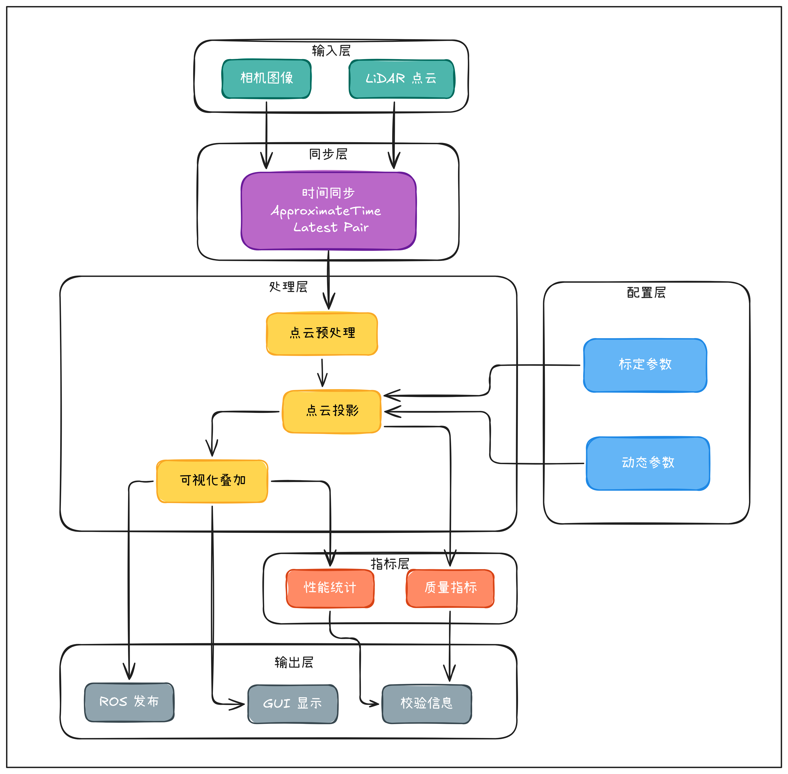
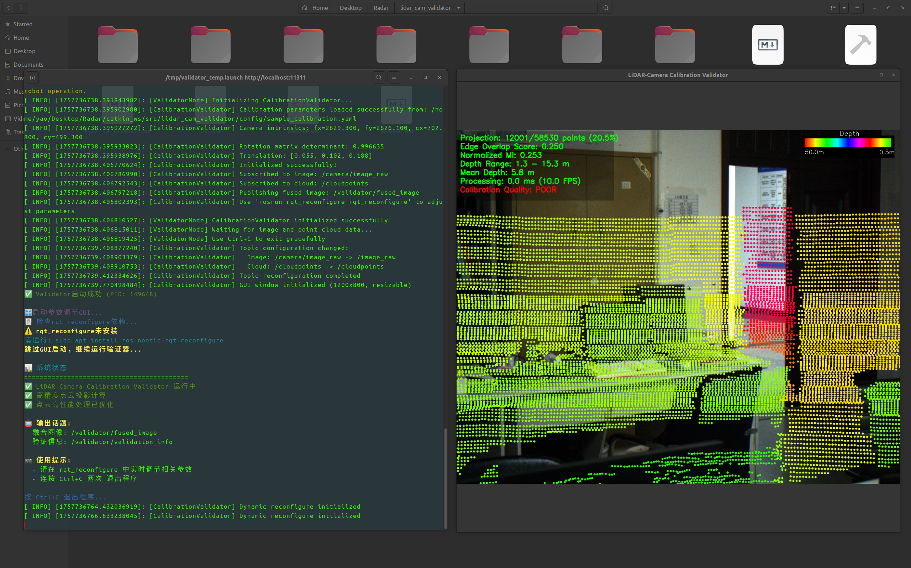
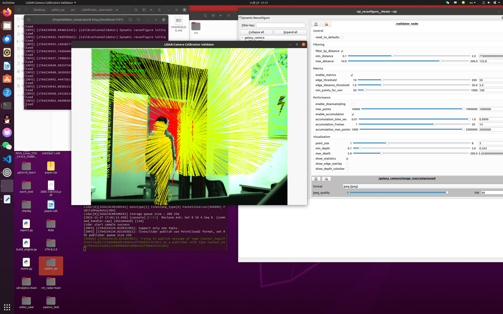

LiDAR-Camera Calibration Validator
A ROS1 / ROS2 toolkit for validating LiDAR-camera calibration through real-time projection, visual overlay, and field-oriented sensor synchronization.

Overview
LiDAR-camera calibration is a small but important part of robotic perception. A calibration result may look numerically valid, yet still fail visually when projected into real scenes. This project focuses on fast visual validation: projecting LiDAR point clouds onto camera images and helping users judge whether the extrinsic parameters are actually usable.
The validator is designed as a practical tool rather than a full calibration algorithm. It helps inspect, compare, and refine existing calibration parameters through visualization, online parameter tuning, and lightweight quantitative cues. Later versions also target practical deployment issues: non-repetitive LiDAR scans, missing hardware time synchronization, ROS2 parameter workflows, and QoS compatibility.

Features
- Distortion-aware point cloud projection onto camera images.
- Visual checking of LiDAR-camera alignment through projected points.
- Edge-overlap and lightweight image-depth consistency metrics for calibration quality estimation.
- ApproximateTime and latest-style synchronization modes for both time-aligned sensors and loosely synchronized field setups.
- Multi-frame point cloud accumulation for sparse or non-repetitive LiDARs such as Livox-style sensors.
- Online parameter adjustment through ROS1 dynamic_reconfigure or ROS2 native parameters.
- ROS2 support with configurable fused-image QoS, render timer, projection cache, metrics interval, and TBB-based projection for larger point clouds.

Evolution
The project gradually moved from a basic ROS1 visual overlay into a field-oriented validation tool. The first ROS1 version started with projected point-cloud visualization and later added distortion-corrected projection, edge-based metrics, dynamic parameter tuning, FPS and processing-time monitoring, and parallel projection for large point clouds.
The next stage focused on real LiDAR deployment. It added support for non-repetitive LiDAR scans, especially Livox-style sensors, and introduced latest/latest_pair synchronization so visual validation can still work when strict hardware time synchronization is unavailable.
The ROS2 Humble implementation then moved the build and launch path
to ament_cmake, rclcpp, and
ros2 launch; runtime tuning moved from
dynamic_reconfigure to ROS2 parameters; the fused image
publisher gained configurable QoS reliability; and
parameter updates are checked after application so tuning failures are
easier to notice.

Why It Matters
Multi-sensor perception pipelines depend heavily on reliable extrinsic calibration. When the alignment between LiDAR and camera is off, downstream perception modules may silently inherit geometric errors. A lightweight validation tool makes this failure mode easier to notice before it affects mapping, detection, tracking, or planning.
The project is also shaped by field constraints. Spinning LiDAR,
non-repetitive LiDAR scans, and Livox-style sensors do not always
produce equally dense or equally regular point clouds, and not every
setup has precise hardware time synchronization. Supporting
accumulation, latest-style matching, online tuning, and configurable
ROS2 QoS makes the validator useful outside carefully
prepared lab recordings.
Principle
The validator treats calibration quality as a LiDAR-to-image
projection problem. It loads three fields from an OpenCV YAML
calibration file: the camera intrinsic matrix
K_0, the distortion coefficients C_0, and
the LiDAR-to-camera extrinsic transform E_0.
pc = E0pl, pl = [xl, yl, zl, 1]T, pc = [Xc, Yc, Zc, 1]T E0 is expected to map LiDAR to camera. If a calibration tool exports camera-to-LiDAR, the inverse transform should be used. Only points with positive camera-frame depth above a small near-plane threshold are valid for projection.
Each incoming PointCloud2 frame is converted to a
PCL cloud, optionally accumulated, downsampled, and
distance-filtered. Valid points are normalized by depth, corrected
with the Brown-Conrady radial-tangential distortion model when
distortion parameters are available, and mapped to image pixels
through the camera intrinsics.
The overlay is paired with lightweight quality cues. Projection ratio measures how many LiDAR points land inside the image. Edge overlap runs Canny edge detection and a distance transform, then checks how many projected points fall near visual edges. The image-depth consistency score in this implementation samples image intensity at projected pixels and compares it with point depth as a correlation-style signal.
Scorr = | cov(I(ui, vi), Zi) | / (σIσZ) These scores give quick cues, while the visual overlay remains the main validation signal.
The two versions show the same validation idea across two ROS
generations: a ROS1 implementation focused on
dynamic_reconfigure and synchronized visual inspection,
and a ROS2 implementation redesigned around parameters,
QoS, projection caching, render scheduling, and
TBB-based parallel processing for larger point clouds.